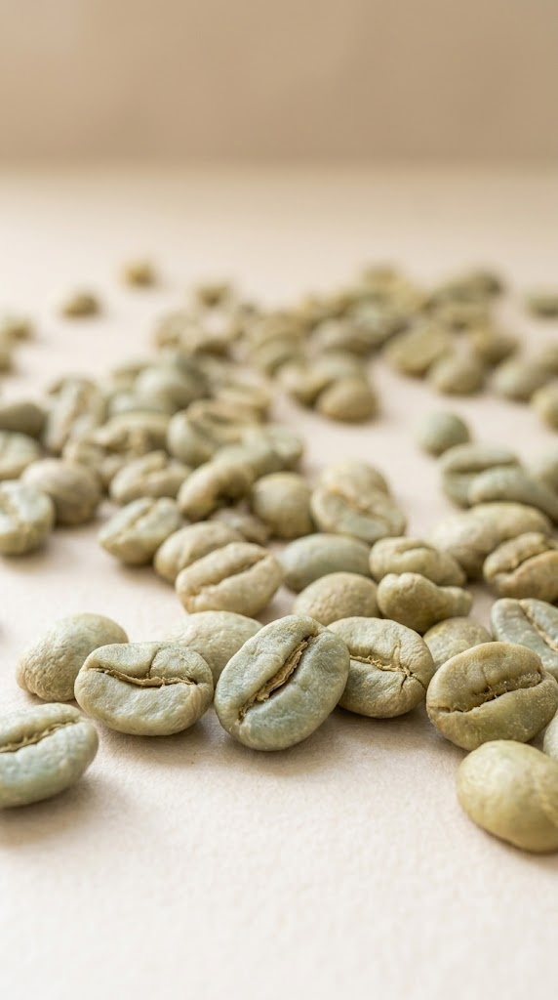

Kaffee ist unser Herzstück
Plantrich GmbH arbeitet mit ausgewählten Produzenten, Kooperativen und Farmergruppen in Vietnam, Indien und Uganda zusammen. Unser Fokus liegt auf hochwertigen Kaffees mit klarer Herkunft, professioneller Qualitätskontrolle und einer transparenten Verbindung zwischen Farm und Käufer.
Vietnam
Robusta-Projekte mit Fokus auf Frauenbeteiligung, Farmtraining, Qualitätsverbesserung, Rückverfolgbarkeit und zukünftige Bio-Zertifizierung.
Indien
Schattengewachsener Kaffee aus traditionellen Anbauregionen, verbunden mit Bio-Gewürzen, Kräutern und nachhaltiger Landwirtschaft.
Uganda
Kaffeeprojekte mit Kleinbauern, Farmergruppen und nachhaltiger Entwicklungsarbeit in ländlichen Regionen.
Vom Ursprung bis nach Europa – Kaffee mit Menschen, Belegen und Sinn.

Bio-Gewürze und Kräuter mit Herkunft
Neben Kaffee bietet Plantrich GmbH Zugang zu sorgfältig ausgewählten Gewürzen und Kräutern aus verantwortungsvollen Lieferketten.
Schwarzer Pfeffer
Ingwer
Kurkuma
Kardamom
Nelken
Muskatnuss
Kräuter
Oleoresins
Unsere Stärke liegt nicht nur im Handel, sondern auch in Qualitätsmanagement, Dokumentation, Logistikkoordination und Kundenbetreuung für EU-Käufer.
Frauen im Ursprung stärken
Unsere Projekte legen besonderen Wert auf die Rolle von Frauen in Kaffee, Gewürzen und ländlicher Entwicklung. Frauen übernehmen wichtige Aufgaben in Ernte, Sortierung, Qualitätskontrolle, Farmdokumentation, Training und Koordination.
Plantrich unterstützt eine neue Generation von motivierten Frauen in den Ursprungsländern – mit Wissen, Verantwortung und internationaler Marktorientierung.
Vietnam
Frauen auf Kaffeeplantagen und im Cupping-Training.
Indien
Frauen sortieren Gewürze und Kaffee für Premium-Ursprungsqualität.
Uganda
Bäuerinnen mit Kaffeekirschen und ländlichen Entwicklungsprojekten.
Europa
Saubere Logistik, Laborqualität, Käufermeetings und Dokumentation.
Digitale Rückverfolgbarkeit für moderne EU-Lieferketten
Plantrich GmbH entwickelt integrierte Daten- und Compliance-Workflows für europäische Käufer. Unsere Systeme unterstützen Produzenten und Farmergruppen bei digitaler Dokumentation, Zertifizierungsmanagement und EUDR-bezogener Transparenz.
Produzenten-ERP-Integration
Verbindung von Farmerdaten, Einkauf, Lager, Qualität, Export und Dokumentation.
EUDR-Bereitschaft
GPS-Daten, Farmprofile, Risikoanalyse, Lieferkettentransparenz und digitale Nachweise.
Dokumentation vom Ursprung zum Käufer
Chargenrückverfolgung, Qualitätsberichte, Zertifikate, Einkaufsdaten und Exportdokumente.
Rückverfolgbar. Konform. Vernetzt. Bereit für Europa.
Europäische Präsenz. Starke Wurzeln im Ursprung.
Plantrich GmbH mit Sitz in Hamburg wurde aufgebaut, um europäische Käufer professionell mit Agrar- und Lebensmittelprodukten aus nachhaltigen Lieferketten zu verbinden. Der Unternehmenszweck umfasst Import, Handel, Lagerung, Vertrieb und Vermarktung von Agrar- und Lebensmittelprodukten, insbesondere Bio-Gewürze, Kräuter, Kaffee und verwandte Produkte.
Das Unternehmen verbindet europäische Marktanforderungen mit Produzentenrealität in Vietnam, Indien und Uganda.
Unsere Arbeit basiert auf langfristigen Partnerschaften, transparenter Dokumentation, Qualitätsbewusstsein und menschlichem Vertrauen.
Für Röster, Händler und Bio-Importeure in Europa
Plantrich GmbH bietet europäischen Käufern:
- Zuverlässige Kaffeeversorgung
- Bio-Gewürze und Kräuter
- Rückverfolgbarkeit auf Produzentenebene
- Datenworkflows für EUDR
- Qualität und Logistikkoordination
- Verbindung zu Bauern und Genossenschaften
- Digitale Dokumentation und ERP-Integration
- Ursprungsentwicklung mit Frauenfokus
Lassen Sie uns Ihre transparente Ursprungslieferkette aufbauen.
Strategische Lösungen für Käufe von Kaffee, Bio-Gewürzen und dokumentierter Herkunft, zugeschnitten auf den europäischen Markt.
Kontakt aufnehmen
Sprechen Sie mit uns über Ihre Anforderungen in Kaffee, Gewürzen, Traceability und EU-Compliance.
Direkter Kontakt
Kontakt aufnehmen